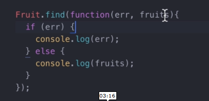

Read Method
First of, to print all data in the collection, we first call in our collection name then attach a method called .find()

This accepts 2 parameter, first is the error to check wether something goes wrong but if there is no errors, it will print out all data in the fruits.
The main difference between findMany or find and findOne


find many and find will output an array of objects while findone will output a single object.
We can also make the result of foundList to be save to the database.

In the example above, foundList is an array stored somewhere in the code.
It is also a good practive to tell the code to close the connection by saying

Instead of ctrl c everytime you execute it.